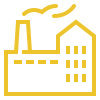

-
тел. +38 097 8755777
Email: a.burde777@gmail.com
Юридична адреса: 65074, м.Одеса, вул.Малиновського, 53.
-
-
АДВОКАТСЬКЕ БЮРО "ТРІУМФ"
АДВОКАТ НАЦІОНАЛЬНОЇ АСОЦІАЦІЇ АДВОКАТІВ УКРАЇНИ БУРДЕЙНИЙ ОЛЕКСАНДР ІВАНОВИЧ
І ПАРТНЕРИСвідоцтво про право на заняття адвокатською діяльністю від 19.10.2012р. № 2436
20 років досвіду на відповідальних посадах органів прокуратури України та 12 років професійної адвокатської діяльності в місті Одеса та Одеській області.
МИ ЗНАЄМО ЯК ЗАХИЩАТИ, НАСТУПАТИ ТА ПЕРЕМОГТИ!
ПОСЛУГИ
Сімейне право
Вирішення спорів щодо нерухомості
ДТП
Цивільні справи

Кримінальні справи
Спадкові справи
Земельні справи
Військові справи
Господарська діяльність/бізнес
АДВОКАТ ПО КРИМІНАЛЬНИМ СПРАВАМ
(діяльність адвоката в слідчих органах та судах)
Кожному громадянину треба добре розуміти, що в
житті можуть раптово виникнути неочікувані ситуації (проблеми) пов’язанні з
криміналом ( і ці відносини регулюються Кримінальним та Кримінально –
процесуальним кодексами України). Тому своєчасна та висококваліфікована допомога
досвідченого адвоката (адвокатів) з кримінальних справ допоможе Вам уникнути
кримінальної відповідальності або мінімізувати покарання, чи домогтися
умовно-дострокового звільнення.
Кримінальні справи є різноманітні і складні, тому важливо не баяти час, а з
самого початку з перших слідчих дій (затримання, першого допиту) адвокату
вступати в процес та захищати ваші інтереси.
Якщо Ви потерпілий, то ми допоможемо Вам притягнути винну особу(осіб) до суворої
кримінальної відповідальності та стягнути на Вашу користь заподіяну злочином
майнову та моральну шкоду у великих розмірах.
Дуже часто в Україні громадянин, який постраждав від злочину, не може домогтися
від правоохоронних органів початку досудового розслідування, притягнення винної
особи до кримінальної відповідальності. Слідчі просто не вносять відомості про
злочин в Єдиний реєстр досудових розслідувань(ЄРДР), і не починають
розслідування, або відомості до ЄРДР внесли, а розшукових і слідчих дій не
проводять. У цих випадках, без кваліфікованої допомоги нашого адвоката не
обійтись.
Наші адвокати здійснюють професійний захист у кримінальних справах підозрюваних,
обвинувачених, засуджених та представництво інтересів потерпілих, свідків на
досудовому слідстві у територіальних відділах та управліннях ( Національної
поліції України, ДБР, БЕБ (Бюро економічної безпеки) СБУ, НАБУ, прокуратури,
САП) та в Судах ( районних, міських, апеляційних судах та Верховному суду
України.)
Наші адвокати можуть бути представником потерпілого, цивільного позивача,
цивільного відповідача, свідка. на досудовому слідстві та в Судах.
Наші адвокати надають послуги:
( вибиріть яка Вам конкретно потрібна послуга (допомога))
Участь адвоката на досудовому слідстві.
1. Консультації у кримінальній справі. Ознайомлення з матеріалами кримінальної справи та розробка плану стратегії захисту з метою досягненя бажаного кінцевого результату;
2. Захист на стадії досудового слідства і дізнання , участь в слідчих діях;
3. Складання процесуальних документів:
- заяви, скарги на бездіяльність слідчих, прокурорів (процесуальних керівників) чи на їх противозаконні дії (без дії); порушення кримінальних справ (внесення повідомлень про кримінальне правопорушення до ЄРДР) стосовно слідчих та прокурорів (ст.ст.214,215, 303 -307 КПК України). Порушення відносно винних службових осіб дисциплінарних проваджень;
- заяви про відвід слідчих чи прокурорів.
4. Складання позовів про відшкодування матеріальних чи моральних збитків;
5. Оскарження запобіжних заходів (арешту, домашнього арешту та ін..);
6. Оскарження арешту майна ( автомобілей, будинків,квартир, земельних ділянок , коштів на банківських рахунках) скасування арешту майна і повернення майна чи коштів законному володільцю (ст.174 КПК України);
7. Збір адвокатом доказів, довідок, характеристик і інших документів, адвокатський запит;
8. Визнанання адвокатом в суді зібраних доказів слідчим у ході досудового слідства - противозаконними;
9. Клопотання слідчому про допит свідків;
10. Клопотання слідчому про призначення необхідних судових експертиз у кримінальному провадженні (ст.220 КПК України);
11. Оскарження Повідомлення про підозру;
12. Ознайомлення зі всіма матеріалами кримінального провадження, з обвинувальним актом і цивільним позовом.
Участь адвоката в Судах
(в судових засіданнях)
1.Ознайомлення з матеріалами кримінальної справи, розробка стратегії захисту з кінцевою метою - уникнути кримінальної відповідальності або мінімізувати покарання, чи домогтися умовно-дострокового звільнення.
2. Складання процесуальних документів заяви, позови клопотання;
3. Заявлення відводів (суддів, прокурорів, секретарів судового засідання, судових експертіів);
4. Допит свідків; експертів;
5. Визнанання зібраних доказів противозаконними;
6. Підготовка заперечення на цивільний позов щодо відшкодування моральних та матеріальних збитків (оскарження суми заподіяних злочином збитків );
7. Зміна чи скасування запобіжних заходів відносно особи, яка притягується до кримінальної відповідальності (арешту, домашнього арешту та ін..);
8. Скасування арешту майна (автомобілей, будинків, квартир, земельних ділянок, коштів на банківських рахунках) повернення майна чи коштів законному володільцю;
9. Ознайомлення з протоколом судового засідання і внесення своїх зауважень до нього.
10. Оскарження вироків суду в апеляційному суді та Верховному суду України.
Представництво інтересів потерпілого, цивільного позивача, свідка на стадії досудового слідства та безпосередньо в Суді (в судових засіданнях).
1. Ознайомлення з матеріалами кримінальної справи та розробка стратегії з метою притягнення винної особи (осіб) до суворої кримінальної відповідальності та стягнення на Вашу користь майнової та моральної шкоди у великих розмірах;
2.Представництво ваших інтересів в суді (участь в судових засіданнях за вашою участтю чи без вашої участі, як вам зручно);
3. Збір необхідних документів, довідок, складання цивільного позову у кримінальному провадженні про відшкодування моральних та матеріальних збитків;
4. Заявлення клопотань і відводів;
5. Допит свідків; експертів;
6. Заяви про витребування доказів;
7. Заяви про призначення необхідних судових експертиз;
8. Оскарження рішення суду в апеляційному суді та Верховному суду України.
Захист прав засудженого.
1. Умовно-дострокове звільнення від відбуття покарання;
2. Дострокове погашення судимості, зняття судимості;
3. Оскарження дій (бездіяльності) та (або) рішень адміністрації колонії.
Екстрадиція
( повернення з інших країн наших громадян в правове поле України).
Захист прав громадян України у Європейському суду.
Ми гарантуємо зберігати адвокатську таємницю, що буде зафіксовано в договорі про надання правової допомоги.
Про Мене
БУРДЕЙНИЙ ОЛЕКСАНДР ІВАНОВИЧ
Адвокат Національної асоціації адвокатів України
Після закінчення стаціонарного відділення Української юридичної академії ім. Ярослава Мудрого (м.Харків) в 1991 році, працював на держаних посадах та органах місцевого самоврядування:
- слідчого прокуратури району Ананьївського району Одеської області;
- помічника, старшого помічника прокурора Балтського району Одеської області;
- був обраний депутатом Балтської районної ради Одеської області;
- був обраний першим заступником голови Балтської районної державної адміністрації Одеської області;
- прокурором (керівником) прокуратури Миколаївського району Одеської області;
- прокурором (керівником) прокуратури Овідіопольського району Одеської області;
- заступником прокурора (керівника) прокуратури міста Одеси;
- начальником СУ (Слідчого управління) прокуратури Одеської області;
- начальником відділу протидії та запобігання корупції прокуратури Одеській області;
- начальником та прокурором відділу опрацювання оперативної інформації прокуратури Одеської області;
3 2012 року, - адвокат Національної асоціації адвокатів України.
Свідоцтво про право на заняття адвокатською діяльністю від 19.10.2012р. № 2436, видане Кваліфікаційно-дисциплінарною комісією адвокатури Одеської області.


Дорогі друзі!
Адвокати і юристи нашого адвокатського бюро «Тріумф» готові стати вашими надійними партнерами та захисниками прав і інтересів при вирішені вами правових питань: у всіх державних, контролюючих та судових органах (місцевих судах, в апеляційних та касаційних інстанціях); в Адміністративних та Господарських судах; в правоохоронних органах України (МВС (поліції, ДПС), прокуратури, СБУ, ДБР, НАБУ, САП, фіскальних органів); в виконавчих органах державної влади; в підприємствах різних форм власності; в Банківських установах; в Митних органах України; в Прикордонній службі України, в Податковій службі, В Міністерстві оборони України, ТЦК СП та Виконавчій службі України( їх територіальних управліннях та відділах).
Адвокати і юристи нашого адвокатського бюро на протязі багатьох років успішно надають поміч та захищають громадян (сім’ї) України, іноземних громадян та підприємства які здійснюють свою діяльність в Україні.
МИ ЗНАЄМО ЯК ЗАХИЩАТИ, НАСТУПАТИ ТА ПЕРЕМОГТИ!
Багаторічний досвід наших адвокатів, їх порядність, професіоналізм, вміння наладжувати необхідні зв’язки, розпутувати складні схеми та нормалізовувати розірвані стосунки, або за бажанням замовника: «знищувати правового ворога до кінця», стали головною складовою (заставою) перемоги в багатьох цивільних, адміністративних, кримінальних, господарських, трудових, спадкових, земельних, сімейних справах та виконавчих провадженням.
Ви маєте можливість прямо в цей час зателефонувати і зв’язатися з черговим адвокатом нашого адвокатського бюро.
тел.: +38 097 87 55 777Адвокат
Олександр Бурдейний
Індивідуальне виготовлення меблів та предметів інтер'єру
Кухня за два тижні з доставкою та встановленням
Залишити заявкуЯк ми працюємо
-
Заявка
Ви залишаєте заявку або дзвоните нам.
-

Зустріч
Ми зустрічаємось на об'єкті, знімаємо виміри, обговорюємо деталі.
-

Пропозиція
Ми готуємо ескізні рішення та розрахунок вартості для узгодження з вами.
-
Договір
Ми підписуємо договір. Ви вносите аванс необхідний для виготовлення ваших меблів.
-
Виготовлення
Ми виготовляємо ваші меблі.
-

Доставка та встановлення
Ми доставляємо ваші меблі на об'єкт і професійно їх монтуємо.
-
Прийом передача
Ви перевіряєте нашу роботу і оплачуєте залишок вартості за договором.
Чому з нами можна працювати
-
Ми виготовляємо меблі з 2006 року.
-
У нас понад 2000 задоволених клієнтів
-

Виробництво у власності
-
Тільки професійні співробітники
-

Ми не порушуємо умови договору.
-

Ми уважно ставимося до кожного побажання нашого замовника
-
Ми любимо свою роботу
-
Будь-яка форма оплати(готівкові, безготівкові, платимо пдв)
-
Ви ніколи не платите за доставку та підйом на поверх
-
Ви отримуєте спеціальні умови при меблюваннi всієї квартири або будинку.